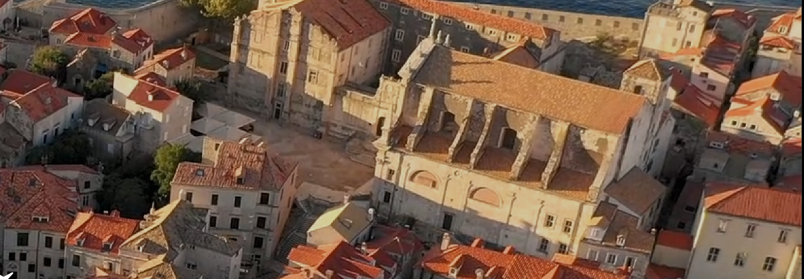

Lokaliteti na karti
Tri lokaliteta u starom gradu Dubrovniku i pet duž obale — od Stona do Konavala.
! Zbog radova na obnovi, Tvrđava Lovrjenac zatvorena je 12. i 13. rujna. Hvala na razumijevanju.

Očaravajuće povijesne lokalitete nekadašnje slavne Dubrovačke Republike.
Tri lokaliteta u starom gradu Dubrovniku i pet duž obale — od Stona do Konavala.
Osam lokaliteta pod zaštitom Društva — od gradskih zidina do kneževih dvora duž obale.